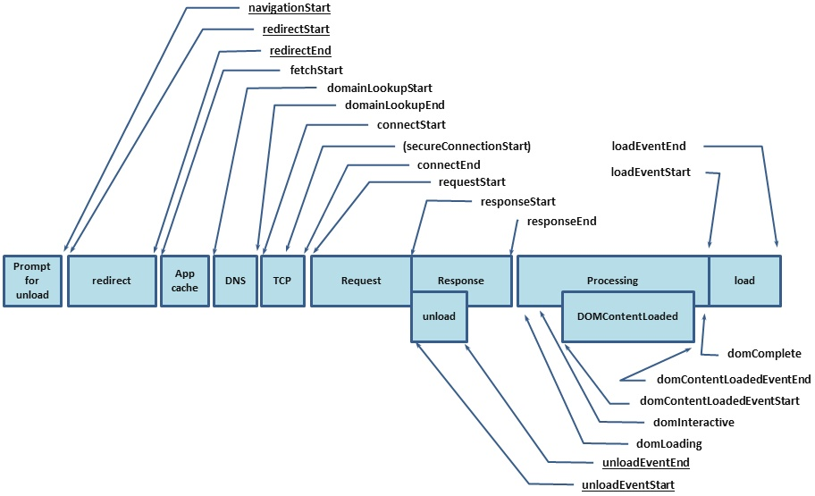

前端异常性能监控
为什么需要异常监控
- 远程定位问题；
- 收集无法复现的问题，尤其是移动端，机型、系统等因素较多；
- 增强用户体验；
前端异常
1. 前端异常类型
- JS 语法错误
- 请求异常（AJAX、fetch）
- 静态资源加载异常
- Promise 异常
- 跨域 script error
2. 如何收集异常
Try-Catch收集运行时异常
1
2
3
4
5try {
console.log(qwe);
} catch(e) {
console.log('捕获到异常：',e);
}异步异常无法捕获
1
2
3
4
5
6
7
8
9
10function main() {
try {
new Promise(() => {
console.log(qwe)
});
} catch (e) {
console.log('捕获到异常：', e)
}
}
main()- 为什么无法捕获异步异常

window.onerror当
JS运行时发生错误，window会触发一个ErroeEvent接口的 error 事件，并执行window.onerror()1
2
3
4
5
6
7
8
9
10
11
12/**
*
* @param message 错误信息（字符串）。
* @param source 发生错误的脚本URL（字符串）
* @param line 发生错误的行号（数字）
* @param col 发生错误的列号（数字）
* @param error Error对象（对象）
*/
window.onerror = function(message, source, line, col, error) {
console.log('捕获到异常：',{message, source, line, colno, error});
}
qwe();可以捕获同步和异步异常
Promise 异常无法捕获
无法捕获到语法错误
Promise Catchwindow.onerror虽然可以捕获到异步异常，但是无法捕获到 Promise 异常，所以建议在使用Promise时加上catch处理抛出的异常。1
2
3
4
5new Promise((resolve, reject) => {
reject('throw error')
}).catch((error) => {
console.log('Promise catch error:', error)
})window.addEventListener unhandledrejection为了防止有漏掉的
Promise异常，可以使用全局的unhandledrejection监听，用于监听Uncaught Promise Error1
2
3
4
5
6window.addEventListener("unhandledrejection", function(e){
console.log('unhandledrejection 捕获到异常：', e);
});
new Promise((resolve, reject) => {
reject('throw error')
})window.addEventListener onerror上面介绍的情况只能收集运行时发生错误，当资源文件（图片、脚本等）加载失败时，失败资源元素会触发一个
Event接口的error事件，并执行该元素上的onerror函数。1
2
3
4
5<scritp>
window.addEventListener('error', (error) => {
console.log('捕获到异常：', error);
}, true)
</script>- 需要在资讯加载前注册，一般需要写在希望监控的资源标签前
Vue errorHandler在组件的渲染和观察期间未捕获错误的处理函数。这个处理函数被调用时，可获取错误信息和 Vue 实例。
1
2
3
4
5
6
7
8
9/**
*
* @param err 错误信息
* @param vm Vue 对象
* @param info Vue 特定的错误信息，比如错误所在的生命周期钩子
*/
Vue.config.errorHandler = function (err, vm, info) {
// do something
}
异常定位
source-map 使用
性能监控
window.performance数据结构
memory 内存
usedJSHeapSize：JS 对象当前占用的内存（包括引擎对象）totalJSHeapSize：分配可使用的内存jsHeapSizeLimit：可使用最大内存
navigation 导航
- redirectCount：跳转到当前页面的重定向次数
- type：
- 0 即 TYPE_NAVIGATENEXT 正常进入的页面（非刷新、非重定向等）
- 1 即 TYPE_RELOAD 通过 window.location.reload() 刷新的页面
- 2 即 TYPE_BACK_FORWARD 通过浏览器的前进后退按钮进入的页面（历史记录）
- 255 即 TYPE_UNDEFINED 非以上方式进入的页面
timing 时间数据
下图展示了打开一个页面发生的过程和 timing 记录的数据在流程上的对应：

节点含义：
redirectStart和redirectEnd：如果页面是由 redirect 而来，则redirectStart和redirectEnd分别代表 redirect 开始和结束的时间节点；unloadEventStart和unloadEventEnd：如果前一个文档和请求的文档是同一个域的，则unloadEventStart和unloadEventEnd分别代表浏览器 unload 前一个文档的开始和结束时间节点。否则两者都等于0；fetchStart是指在浏览器发起任何请求之前的时间值。在fetchStart和domainLookupStart之间，浏览器会检查当前文档的缓存；domainLookupStart和domainLookupEnd分别代表 DNS 查询的开始和结束时间节点。如果浏览器没有进行 DNS 查询（比如使用了 cache ），则两者的值都等于fetchStart；connectStart和connectEnd分别代表 TCP 建立连接和连接成功的时间节点。如果浏览器没有进行 TCP 连接（比如使用持久化连接 webscoket），则两者都等于domainLookupEnd；secureConnectionStart：可选。如果页面使用 HTTPS，它的值是安全连接握手之前的时刻。如果该属性不可用，则返回 undefined。如果该属性可用，但没有使用 HTTPS，则返回0；requestStart代表浏览器发起请求的时间节点，请求的方式可以是请求服务器、缓存、本地资源等；responseStart和responseEnd分别代表浏览器收到从服务器端（或缓存、本地资源）响应回的第一个字节和最后一个字节数据的时刻；domLoading代表浏览器开始解析 html 文档，解析 Dom 树的时间节点。domInteractive代表浏览器解析 html 文档的状态为 interactive 时的时间节点。domInteractive并非DOMReady，它早于DOMReady触发，此时 html 文档解析完毕，但是内嵌资源（比如外链css、js等）还未加载的时间点；
domContentLoadedEventStart：DOM 解析完成后，网页内资源开始加载的时间。domContentLoadedEventEnd：网页内资源加载完成的时间。domComplete：DOM 解析完成且资源准备就绪的时间loadEventStart和loadEventEnd分别代表onload事件触发和结束的时间节点
主要数据的收集计算
DNS
- domainLookupStart``` 1
2
3
4
- TCP
```connectEnd - connectStart首次出现内容
- timing.navigationStart``` 1
2
3
4
- request
```timing.responseStart - timing.requestStart
Resource timing
performance.timing 已经完整的记录了页面从开始网络加载到最终 DOM 全部加载完成的各个时间节点，但是对于页面内容的加载（CSS、JS 等），只有domContentLoadedEventStart和domContentLoadedEventEnd记录了总体时间，如果希望统计每一个资源的加载耗时情况，可以使用Resource timing API。
获取资源加载时间
使用方法：
1
2
3
4
5
6
7
8
9
10
11
12
13
14
15
16
17
18
19
20
21
22
23
24
25
26
27
28
29
30
31
32
33
34
35
36
37
38
39
40
41
42
43
44
45
46
47
48
49
50
51
52
53
54
55
56
57
58
59
60
61
62
63
- 数据格式

- name：资源的链接
- initiatorType：初始类型
- duration：资源总耗时
## 上期遗留问题分享：preload、prefetch
### preload、prefetch 介绍
#### preload
`preload`是一个预加载关键字。它显式地向浏览器声明一个需要提前加载的资源。浏览器识别到该关键字时，就会以一定的优先级在后台加载资源，加载完的资源放在 HTTP 缓存中。等到真正执行时，再以正常的加载方式，从 HTTP 缓存中去除资源。
使用`preload`加载资源的方式有以下几个特点：
- 提前加载资源
- 资源的加载和执行分离
- 不延迟网页的load事件
#### prefetch
跟`preload`类似，`prefetch`也是 Link 的一种关系类型值，用于提示浏览器提前加载资源。跟`preload`不同，`prefetch`指示的是**下一次**导航可能需要的资源。浏览器识别到`prefetch`时，应该加载该资源（且不执行），等到真正请求相同资源时，就能够得到更快的响应。
### 区别
#### 1. 网络请求的优先级
Chrome 中，Prefetch 的优先级为 Lowest。而 Preload 的优先级则是根据 as 属性值所对应的资源类型来决定，总体上，Preload 的优先级比 Prefetch 高。不过两者都不应该延迟页面的 load 事件。
#### 2. 缓存策略
Preload 加载的资源至少会被缓存到内存中，下一次请求的时候直接从缓存读取，从而减少从服务器加载的时间。
Prefetch 的缓存并未在标准中定义，所以浏览器不保证缓存资源。不过会根据资源本身的缓存头进行相应的处理。
#### 3. 重复加载
如果 Preload 的资源还在途中，此时对相同的资源再发起请求，浏览器不会重复请求资源，而是等返回了再进行处理。
#### 4. 页面跳转时的行为
如果在当前页面跳转到下一页，在途的Preload请求会被取消。
而如果Prefetch的资源还在途中，再发请求，会导致二次请求。
### 如何使用
- 在HTML的<head> 中：<link rel="prefetch/preload" href="/library.js" as="script">
- 通过JS动态插入：
```javascript
var hint = document.createElement("link");
hint.rel = "prefetch";
hint.as = "html";
hint.href = "/article/part3.html";document.head.appendChild(hint);
参考链接
- https://juejin.im/entry/5bed4612e51d4528a14e076e
- https://mp.weixin.qq.com/s?__biz=MzA5NzkwNDk3MQ==&mid=2650587940&idx=1&sn=12eb51f4f9c749f68d137dfcf417f7ba&scene=21#wechat_redirect
- https://blog.fundebug.com/2019/04/11/understand-preload-and-prefetch/
- https://zhuanlan.zhihu.com/p/30329705